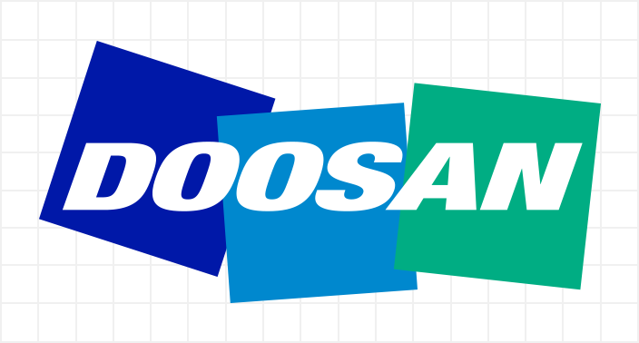
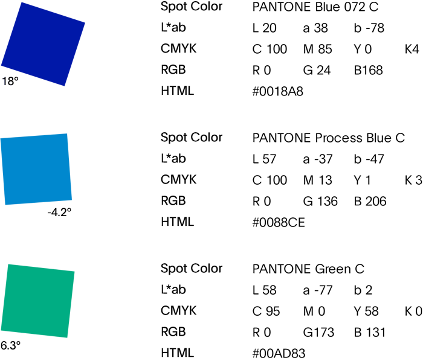
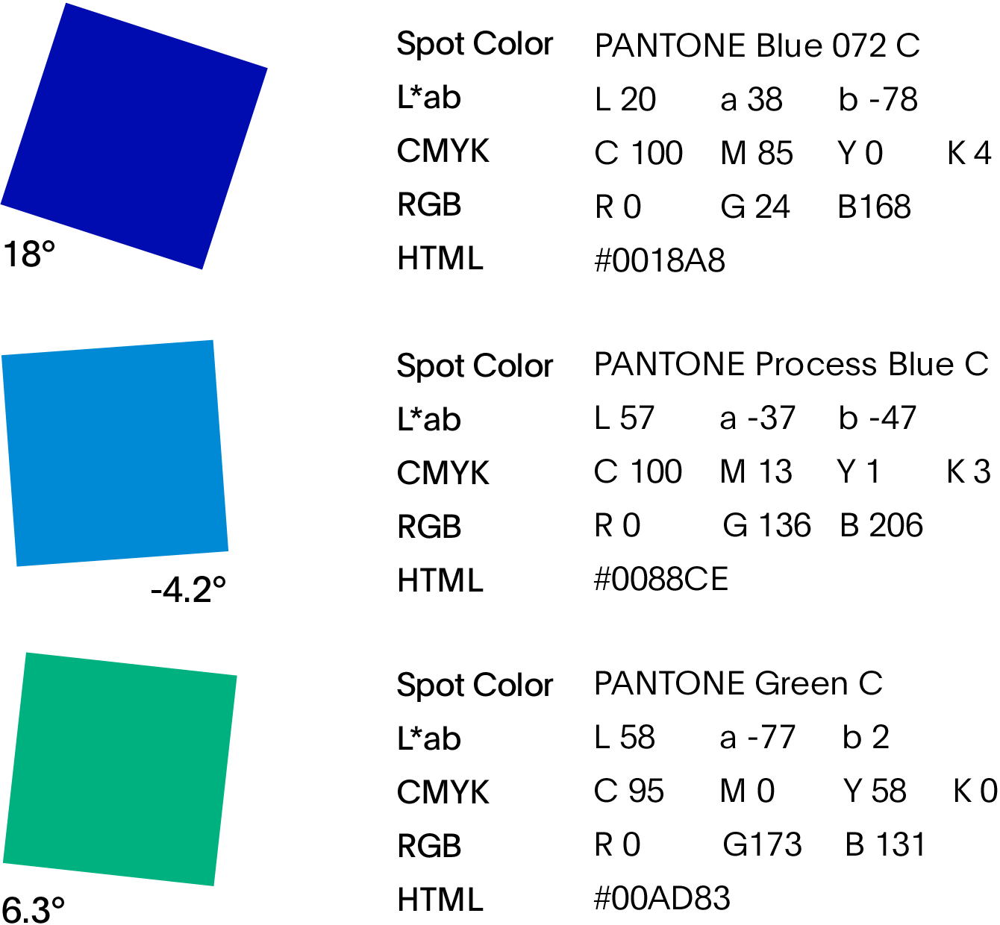
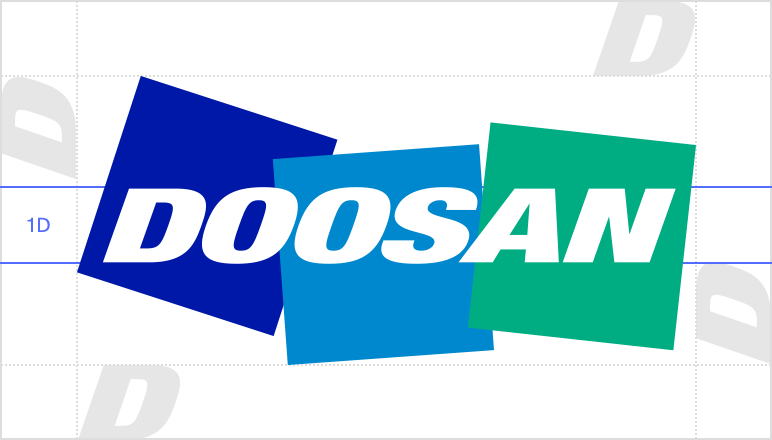
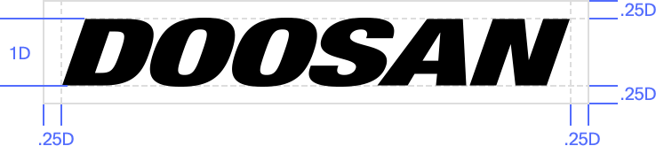

CI
-
- Logo
-
The logo represents the image of a good company that Doosan seeks to project – a warm, confident, powerful and sustainable enterprise.

-
- Three Blocks
-
The three blocks represent the 'people' to which Doosan will devote itself, namely meaning employees, customers, and all of humankind. representing our aspirational spirit.
The squares are angled to indicate forward motion, representing our aspirational spirit.
-
- Three Colors
-
Blue symbolizes reliability and rationality, whereas green reflects warmth and compassion.
The combination of the three colors signifies the harmony and balance among people,
and the gradation from blue to green symbolizes Doosan’s vast potential for growth. 
-
- Clear Space
-
The logo should be surrounded by a clearspace. A minimum distance equal to the height of the “D” must be allowed above, below, and to the sides of the logo.
Maintaining this minimum clearspace will ensure that the logo is never crowded or linked too closely to other graphic elements.
-
- Logotype
-
Whenever possible, the Doosan logo should be used with all of its components, including the three color blocks and white Doosan logotype.
However, in applications with extremely limited space, such as on excavator arms, the Doosan logotype may be used alone.
When used by itself, the Doosan logotype should never be rendered at a width of less than 14 millimeters.